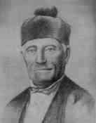

Respuesta correcta

El patriota que fue presidente provisional de la Junta Central Gubernativa tras la independencia fue Tomás Bobadilla y Briones. Asumió el cargo el 1 de marzo de 1844, pero luego fue desplazado por Pedro Santana, quien tomó el control del gobierno.
Siguiente